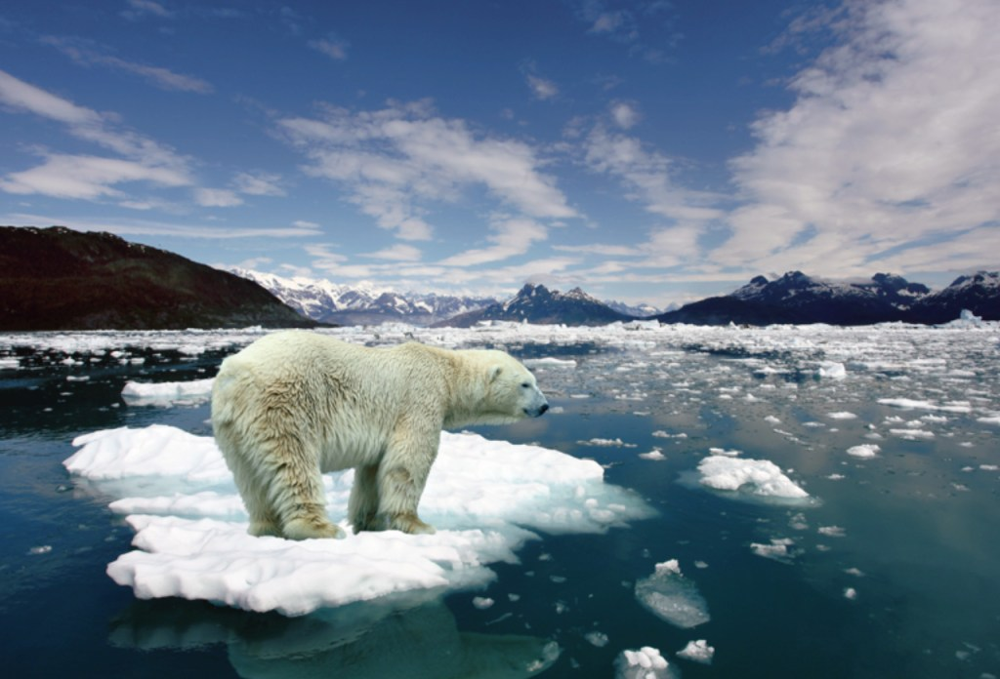
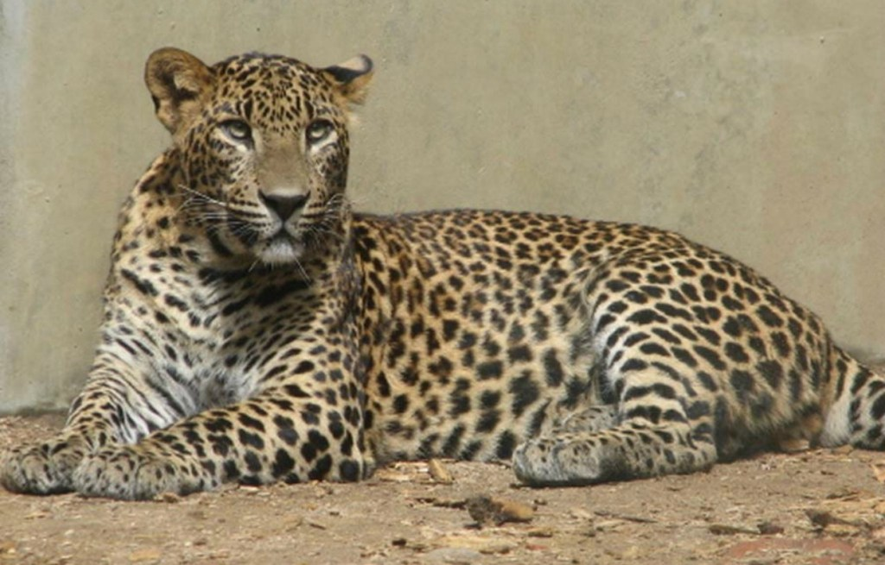

La carne de gorila y los souvenirs hechos de este animal son vendidos a precios sumamente altos; por increíble que parezca el hecho de que estén desapareciendo, sólo ha incrementando su valor en el mercado. La caza furtiva, así como la destrucción de su hábitat natural -bosques- para la producción de madera y la creación de ciertos plantíos en estas áreas han hecho que casi todas las especies de gorilas se encuentren en peligro de extinción.
El aumento en las temperaturas del planeta como resultado del calentamiento global es la principal amenaza al hábitat natural de los osos polares. La disminución de las capas de hielo marino del Ártico provoca que los osos polares tengan que recorrer distancias mucho más largas en busca de comida, dependiendo solamente en sus reservas de grasa por largos periodos de tiempo.
Es imposible saber la cantidad exacta de tiburones blancos ya que tienen un enorme rango de distribución. Su bajo potencial reproductor y su largo periodo de infancia son factores que afectan a la disminución de esta especie.
El rinoceronte blanco, con más de tres toneladas y aproximadamente cuatro metros de largo es considerado el segundo mamífero más grande del continente africano después del elefante. Viven en pequeños rebaños y se caracterizan por ser una especie pacífica y por tener una taza de natalidad bajísima.
La venta ilegal de marfil es la principal razón que amenaza a las poblaciones de elefantes de África y Asia. Otro elemento importante que esta contribuyendo a la desaparición de este majestuoso animal es la continua disminución del hábitat natural de los elefantes.
En gran medida, la repentina disminución de esta especie de atún, que se encontraba con sobre población en el 2006, se debe al incremento en la demanda del sushi, en el mundo occidental. El Atún rojo, o atún aleta azul vive en el Océano Atlántico, el Mar Mediterráneo y el Mar Negro.
Hoy en día no existe ningún tigre de China que viva en su hábitat natural. En 1960, un censo indicó que quedaban 4000 ejemplares; cincuenta años después, este número se ha reducido drásticamente. Hoy en día, quedan 60 representantes esparcidos en el mundo en distintas formas de cautiverio.
Por la caza, la destrucción de su hábitat, y la desaparición de su alimento, esta especie se encuentra al borde de la extinción. Distribuidos entre la península arábiga y el desierto de Néguev en Israel el Leopardo de Arabia es el más pequeño de todos los leopardos. Con apenas centímetros por encima del metro y 30 kilos aproximadamente, esta especie de leopardo se alimenta de pequeños mamíferos como liebres.
El león africano no cuenta con ningún predador natural, pero en últimos años su especie ha disminuido en un 40%, se cree que actualmente quedan solamente 20,000 ejemplares de este animal. Entre las razones que han contribuido a la disminución de esta especie están la perdida de su hábitat natural que se ha reducido a un 8% de lo que alguna vez fue, la caza ilegal y la expansión de la civilización hacia territorios en donde se encontraba el león.